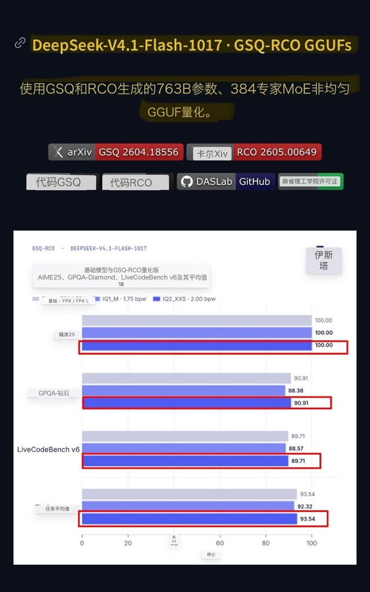
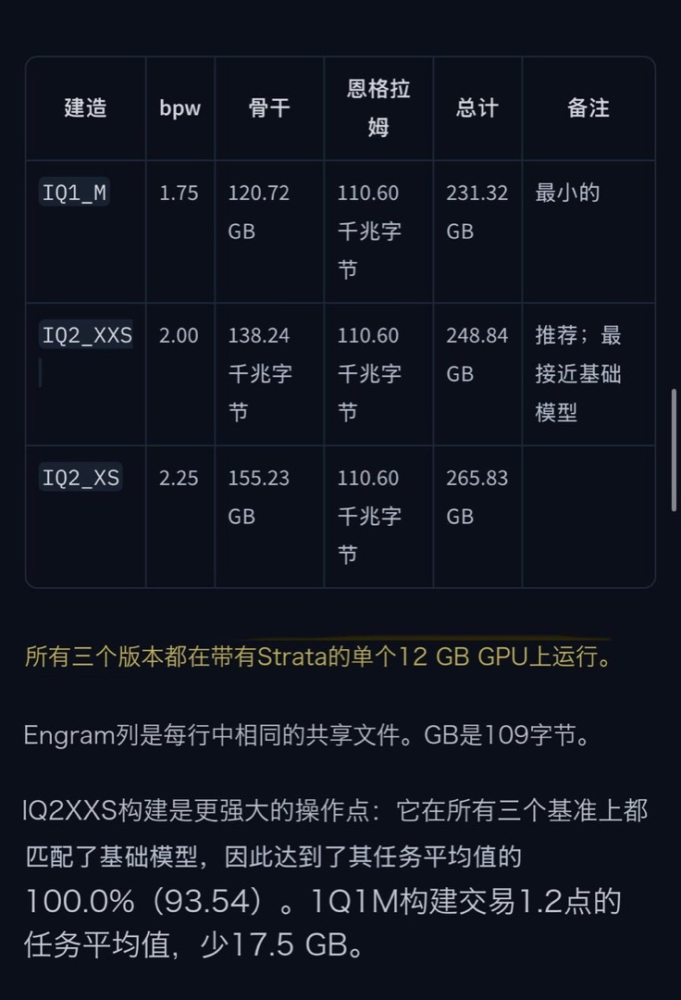
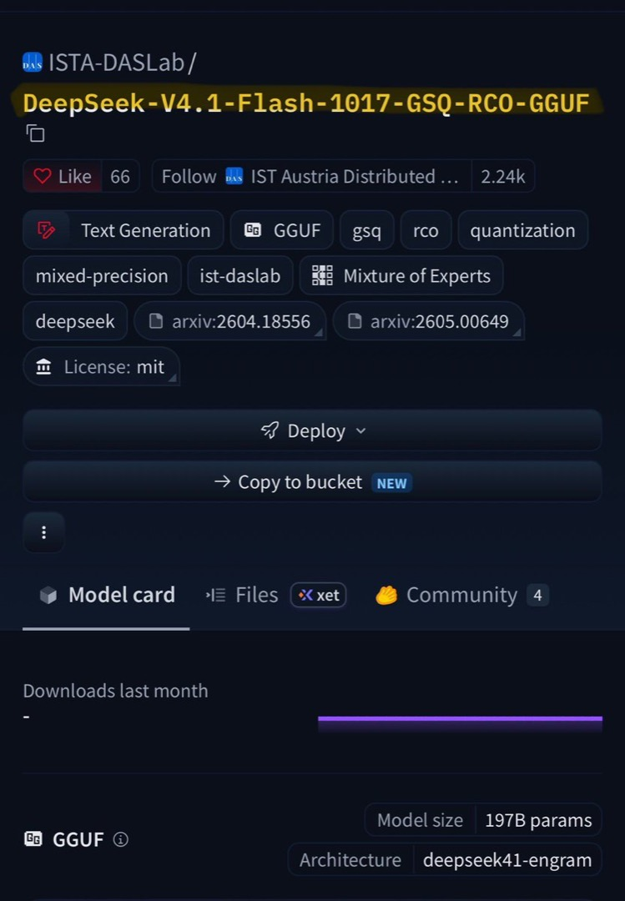
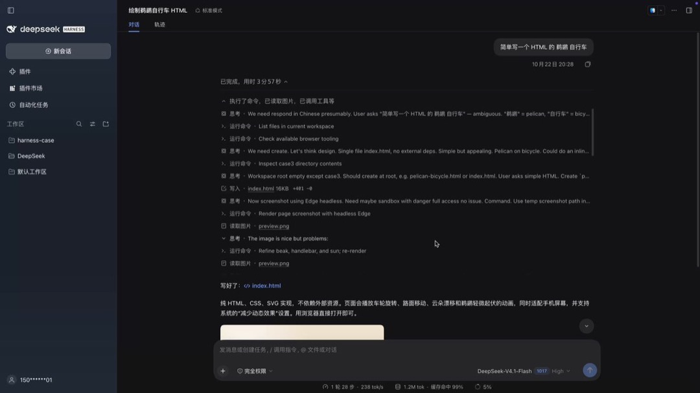
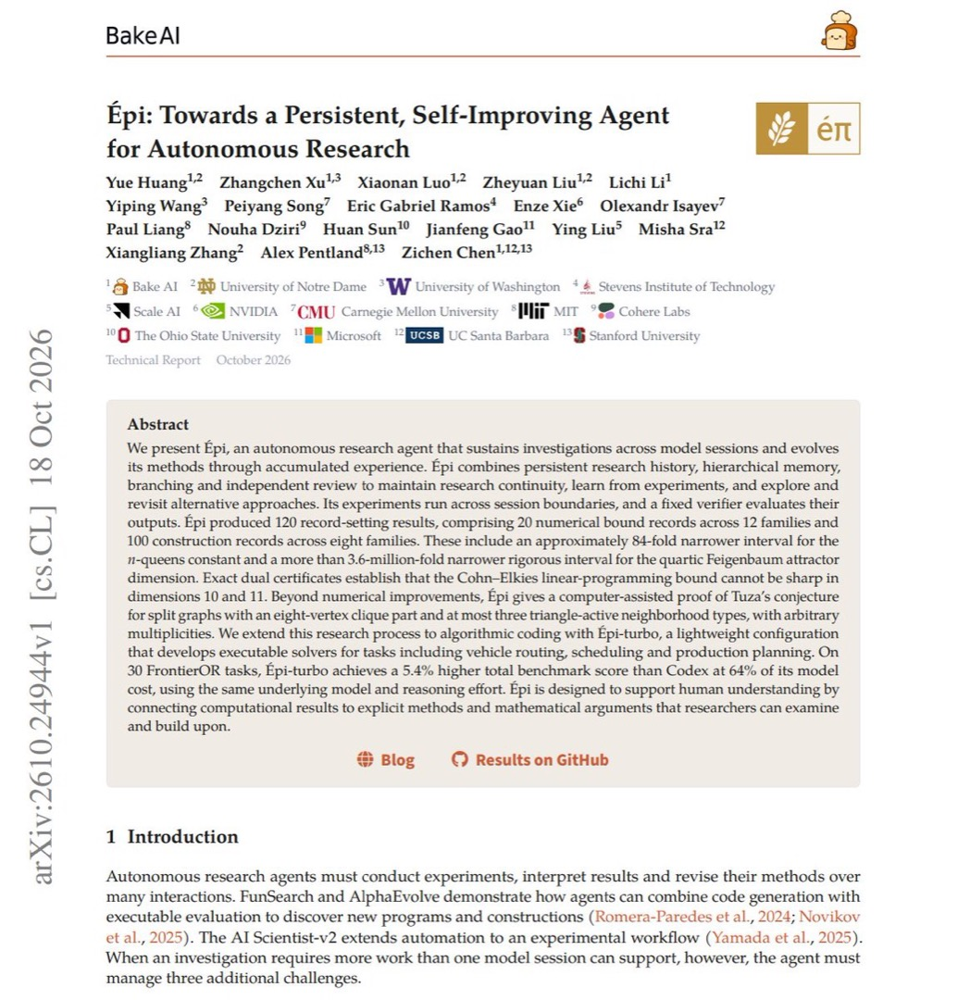
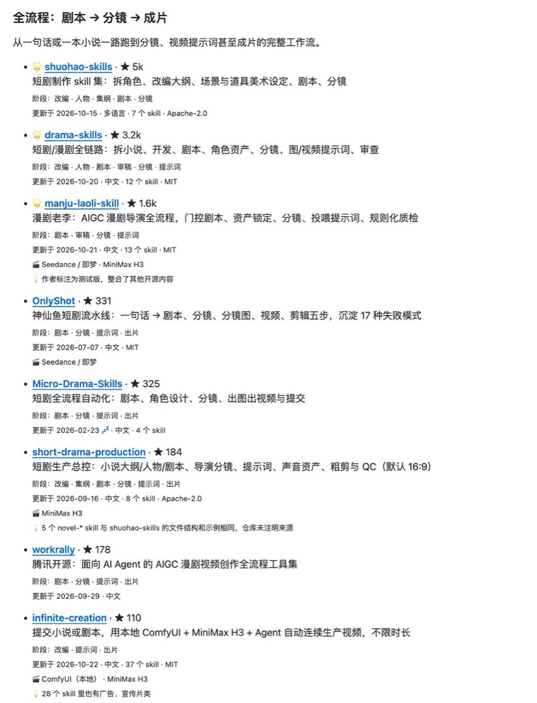
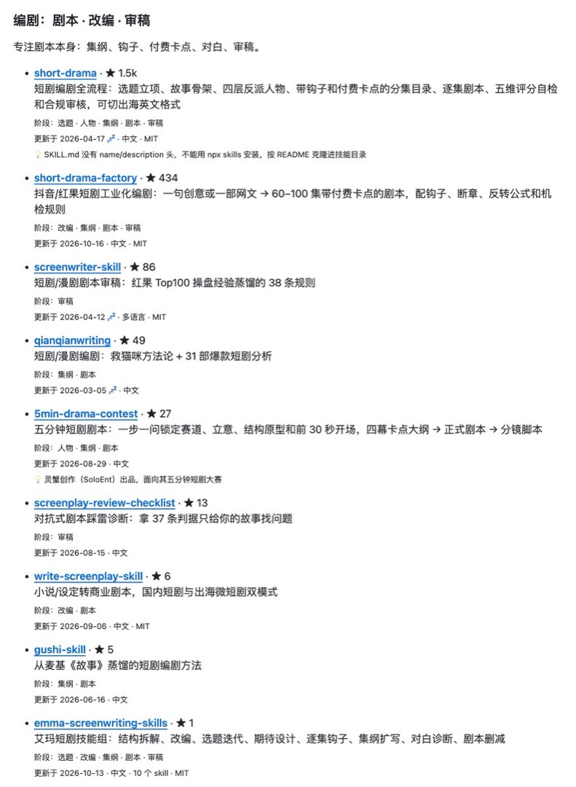
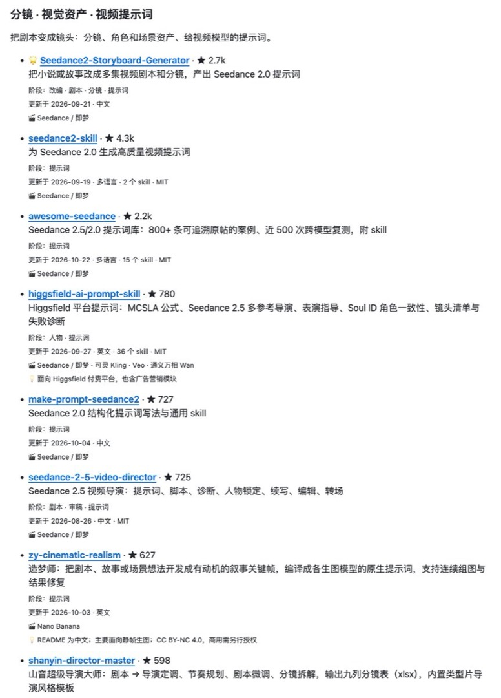
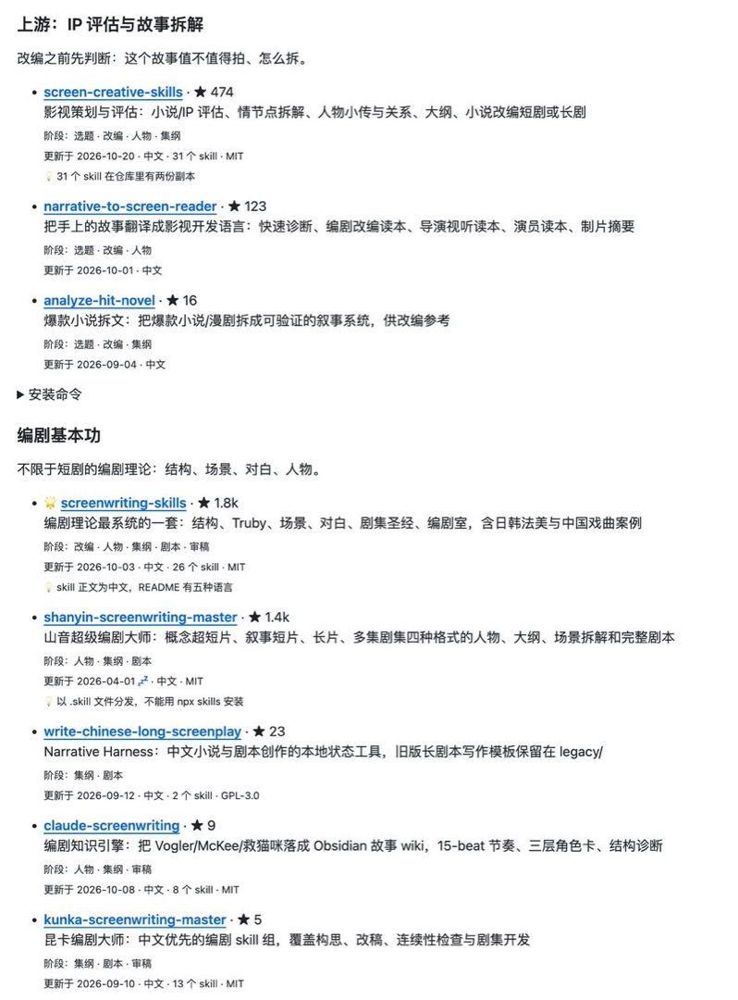

本期速览
01 DeepSeek V4.1 Flash 2bit量化12G可跑
02 Qwen3-TTS开源3秒克隆声音
04 Runware集装箱数据中心专注推理
07 科研Agent Épi产出120项纪录结果
11 12个月8家Agent身份公司被收购
01｜DeepSeek V4.1 Flash 2bit量化12G可跑
来源（X） · @Rakel076 · 2026-10-24 16:10
奥地利 IST 的 DASLab 刚放的量化版，压到平均每个参数 2 bit，AIME25、GPQA、LiveCodeBench 三项分数跟原版一样。
就是别高兴太早：整套文件 249G，显卡里只放一小部分，剩下全靠内存和 SSD 撑。显卡是够了，先去买块硬盘吧😅



02｜Qwen3-TTS开源3秒克隆声音
来源（X） · @Ryrenz · 2026-10-24 17:05
Qwen3-TTS 今年 1 月才发布，GitHub 已经 1.39 万 star，一千八百多个 fork。
以前想给视频配一个固定人设的声音，要么从现成音色库里挑一个凑合，要么录一大堆素材去训练。
Qwen3-TTS 的 Base 模型拿 3 秒音频就能克隆；VoiceDesign 模型更直接，用自然语言描述你想要的声音，它照着生成。中、英、日、韩、德、法、俄、葡、西、意 10 种语言都能说，还带方言音色。
做实时对话也够用：同一个模型同时支持流式和非流式，端到端合成延迟最低 97 毫秒。有 0.6B 和 1.7B 两档，显卡一般就先上小的。
做 AI 主播、有声书、游戏角色配音的，Qwen3-TTS 值得先跑一遍。
GitHub：https://github.com/QwenLM/Qwen3-TTS
03｜DA Registry上线Canton转账验证API
来源（X） · @digitalasset · 2026-09-30 00:18
中文译文
DA Registry 已推出 Proof of Transfer API，为 @CantonNetwork 上的钱包和交易所用户提供了一种独立验证转账状态的方式，无需暴露敏感交易数据。
钱包和交易所可以为 DA Registry 支持的资产公开 Transfer Object。
原文
DA Registry has launched a Proof of Transfer API, giving wallet and exchange users on @CantonNetwork an independent way to verify transfer status without exposing sensitive transaction data.
Wallets and exchanges can expose the Transfer Object for DA Registry-enabled assets.
04｜Runware集装箱数据中心专注推理
来源（X） · @runware · 2026-08-06 17:54
中文译文
一个装在集装箱里的完整数据中心。部署到任何你需要的地方，只需几天，而非数年。专为推理而构建，别无他用，可将你的成本削减高达 90%。
原文
A full data center in a shipping container. Deployed wherever you need it, in days, not years. Built for inference and nothing else, cutting your costs by up to 90%.
05｜Pi Agent跑DeepSeek成本优于DSH
来源（X） · @fankaishuoai · 2026-10-24 12:52
DSH 懂不懂就大思考，拼命输出思考过程不知道在干啥。
我详细对比过这两个跑 DeepSeek，结论就是差不多：简单问题 Pi 略占优，极度复杂问题 DSH 略占优。
引用内容
小墨同学 @xiaomovps
DeepSeek harness 默认的标准模式可能真的会影响 DeepSeek 模型的能力，让模型变得又笨又啰嗦，只是我个人的感受
因为 DeepSeek 我不是第一次用了，我已经用了很长一段时间了，而且都是在 PI agent 上使用的
在上面使用，我感觉干活又快又准，而且整体的 API 消耗都是在可控范围以内
后面我换上了 DeepSeek harness，我想着自家的 harness 肯定会对自家的模型有特殊的加成，因为都流传着在 DSH 上跑出来的分都会更高
所以这段时间我都是在高强度使用，我又发现一个很怪的点
我发现是同一个模型和同一个思考等级
DeepSeek 在 PI agent 上干活的时候基本上不怎么啰嗦，可能是运行两到三轮就已经结束了，而且整体的成果都还是比较满意的
虽然达不到 Claude 的程度，但至少也有 80 分
针对一些不是重度 coding 的用户，或者是一些复杂任务的用户，完全是可以胜任的，而且成本消耗也是可控的
但是把它放到 DeepSeek 上，开启的是标准模式，有的时候会莫名其妙跑个十几二十轮
而且干活时间会拉得比较长，感觉都不像在用 DeepSeek，感觉都在使用 GPT-6 的感觉，整体会变得非常啰嗦，而且会变得非常慢
效果的话，可能会在整体程度上加个 4~5 分
但是从消耗的 token 和时间来说的话，完全是不值得的
后面我又多测试了几轮，发现还是一样的结果，所以我怀疑是不是 DSH 的系统提示词有问题
有没有跟我遇到一样情况的朋友，可以来回答一下我这个问题，到底是我一个人还是大家都遇到了？

06｜PancakeXR E6数据采集设备公布规格
来源（X） · @PancakeXR · 2026-10-14 15:47
中文译文
全新 E6 视频已上线——一体化数据采集设备。
4× 全局快门 + 2× RGB 摄像头
XR2 Gen1 + 4 TOPS NPU
190° 超广视场角
5500mAh 电池
8GB + 128GB 存储
你的 ego 数据，以前所未有的方式被采集。
原文
New E6 video is live — all-in-one data collection device.
4× global shutter + 2× RGB cameras
XR2 Gen1 + 4 TOPS NPU
190° ultra-wide FOV
5500mAh battery
8GB + 128GB storage
Your ego data, captured like never before
07｜科研Agent Épi产出120项纪录结果
来源（X） · @Xudong07452910 · 2026-10-24 12:18
它已经不记得昨天为什么放弃那条路线了。
Épi 想解决的，就是这种长期科研里的「断片」。
它把研究状态放到模型上下文之外长期保存，包括正在跑的实验、代码、失败路线、关键结论和之前为什么做出某个决定。
同时，Agent 可以开多个 Branch 探索不同方法，效果不好就回退到旧版本，再从另一个岔路继续走。
所有结果最后都交给固定 Verifier 检查，避免研究过程中不断变化的方法把评估标准也一起带偏。
这套机制最终产生了 120 个 record-setting results，包括 20 个数值边界纪录和 100 个构造纪录。
其中 n-queens constant 的区间缩小约 84 倍，quartic Feigenbaum attractor dimension 的严格区间缩小超过 360 万倍。
轻量版 Épi-turbo 在 30 个 FrontierOR 任务上，总分比 Codex 高 5.4%，模型成本只有 64%。
Épi值得称赞的地方是它没有把「长期科研」理解成让 Agent 一次跑得更久。
因为下一次回来时，它还知道自己做过什么、为什么失败，以及有哪些旧路线值得重新捡起来。
科研很多时候，就是这样一点点从岔路和失败里长出来的。
📎 arxiv: https://arxiv.org/abs/2610.24944

08｜Strata让DeepSeek-V4.1-Flash 64G可跑
来源（X） · @servasyy_ai · 2026-10-24 12:02
Strata，现在只需 64GB 内存就能运行 DeepSeek-V4.1-Flash。
使用的是由 @mhelcig 制作的 GSQ-RCO 量化版本。
赶紧去试试吧：https://github.com/Niko1221/Strata
09｜Hermes插件生态覆盖语音防火墙混音
来源（X） · @GitTrend0x · 2026-10-24 12:00
Fish Audio 的官方声优插件、Nous Research 的 Labs 实验室、jooray 的提示注入防火墙、somewheresy 的 Ableton 混音助理、styles01 的手表遥控器……全网玩家把 Hermes 玩成了下一代「80 种语言的声优 + 官方黑科技试验田 + 注入防火墙 + AI 录音师 + 戴在手上的 Agent」:
1️⃣ 100yenadmin/fish-audio-hermes（https://github.com/100yenadmin/fish-audio-hermes）
Fish Audio 官方 Hermes 插件：80+ 语言的情绪化语音、社区音色库、克隆或描述生成你自己的声音，外加语音转文字，CLI、聊天软件、桌面端全通。
"你的 Agent 终于有了自己的嗓子"！
2️⃣ NousResearch/hermes-labs-plugins（https://github.com/NousResearch/hermes-labs-plugins）
Nous 官方的"实验室"仓库：没放进核心的功能都在这，Telegram 商务秘书（你批准才发）、一屏看全在跑任务的 Inbox、演示一次就能录下浏览器流程的 Workflow Record。
"官方不保修，但黑科技管够"！
3️⃣ jooray/hermes-firewall（https://github.com/jooray/hermes-firewall）
提示注入闸门：网页、MCP 和工具结果、邮件、文件、图片进模型之前先过一遍，要么原样放行，要么直接扣下，还能切到本地模型离线跑。
"毒网页进不了 Agent 的脑子"！
4️⃣ somewheresy/assistant-engineer（https://github.com/somewheresy/assistant-engineer）
让 Hermes 直接操作 Ableton Live：建工程、写 MIDI、做编曲和自动化、侧链混音、调 VST3，一句"做个 future beat"，它还会自己 QA 到整首完工。
"一个人就是一间录音棚"！
5️⃣ styles01/hermes-watch（https://github.com/styles01/hermes-watch）
把 Hermes 装进 M5Stack 圆形 AMOLED 手表：按住说话、五个 Agent 一键切换、程序化动态头像实时显示它在听、在想、在说，固件还能 WiFi 自己升级。
"抬手就能召唤你的 Agent"！
10｜短剧Skill清单收录83个并带对照实测
来源（X） · @GitHub_Daily · 2026-10-24 12:00
Awesome Short Drama Skills 把这些整理成了一份清单，收了 83 个短剧 Skill 和 16 个相关开源平台，每个都人工核对过。
从小说改编、分集大纲、钩子设计、剧本审稿，到分镜和 Seedance、可灵、MiniMax 的视频提示词，按创作阶段都能查到。
GitHub：https://github.com/UnderleveledBuilder/awesome-short-drama-skills
难得的是作者自己跑了两轮实测，10 个剧本 Skill 和一个不装 Skill 的对照组，各写 3 次同一道题，由 AI 评审盲比。
三次都赢过对照组的有 5 个，每个都写了适合什么、要注意什么。
局限也列得很老实，比如每集结尾的钩子，反而常是对照组写得更好。
这种带对照组的测评我挺认，比只列名字的清单有参考价值。
千问、豆包、Claude Code、Codex 这些支持 Skill 的智能体都能装。手上有本小说想改成短剧，可以直接照着里面的推荐组合来。




11｜12个月8家Agent身份公司被收购
来源（X） · @FinanceYF5 · 2026-10-24 11:48
In 12 months, 8 agent-identity startups were bought: CyberArk (Palo Alto, ~$25B), SGNL (CrowdStrike), Astrix (Cisco), Natoma (Snowflake), Veza (ServiceNow), Oasis (Cyera), Permiso (Okta), Entro (SailPoint).
My take: whoever runs the agent owns its keys, so platforms absorb them. The startup opening is identity built into developer products — WorkOS, Persona, Keycard. (in Chinese)
配音与动画由 AI 生成。